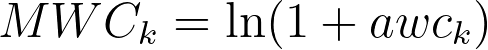

Walk and path counts are topological indices based on the identification of paths, walks and self-returning walks in a H-depleted molecular graph.
alvaDesc calculates 46 descriptors belonging to the walk and path logical block, divided in five groups:
A walk is any sequence of adjacent graph edges connecting atom i to atom j. In a walk it is allowed to go back and forth or to visit vertices repeatedly1. The length (order) of a walk is the total number of edges that are traversed2. The walk count of order k (awck) is the total number of walks of length k in the graph.
alvaDesc calculates molecular walk counts from order 1 up to order 10.
Since molecular walk counts may be very large for molecules with a large number of atoms, alvaDesc provides MWCk values as:
where k is the walk length and awck is the number of walk of length k.
Molecular walk counts are related to branching and complexity of molecular graphs.
A self-returning walk is a walk starting and finishing at the same vertex. The self-returning walk count of order k (srwk) is the total number of self-returning walks of length k in the molecular graph.
alvaDesc calculates self-returning walk counts from order 2 to order 10.
Self-returning walk counts, like molecular walk counts, may be very large for molecules with a large number of atoms. Therefore, alvaDesc provides SRWk values as:
where k is the walk length and srwk is the number of self-returning walk of length k.
A path is a walk without any repeated vertex3,4. The path count of order k (pck) is the total number of paths of length k in the molecular graph.
alvaDesc calculates molecular path counts from order 1 to order 10.
Since molecular path counts may be very large for molecules with a large number of atoms, alvaDesc provides MPCk values as:
where k is the path length and pck is the number of paths of length k.
A multiple path of order k (mpck) is defined as the sum of the products of the bond order of the paths of length k.
Since molecular multiple path counts may be very large for molecules with a large number of atoms, alvaDesc provides piPCk values as:
where k is the path length (from 1 to 10) and mpck is the multiple path of order k.
Molecular multiple path counts have the same value of the molecular path counts for molecules having only single bonds.
Here’s an example using the 2-Methyl-1-butene:
| k | atom 1 | atom 2 | atom 3 | atom 4 | atom 5 | mpck | piPCk |
|---|---|---|---|---|---|---|---|
| 1 | 1 | 2 | 4 | 2 | 1 | 5 | 1.7918 |
| 2 | 1 | 3 | 1 | 4 | 3 | 6 | 1.9459 |
| 3 | 3 | 0 | 0 | 2 | 1 | 3 | 1.3863 |
| 4 | 0 | 0 | 0 | 0 | 0 | 0 | 0.0000 |
The total walk count (TWC) is based on the total number of walks. It can be considered as a measure of molecular complexity that increases both with the increase of the size and the branching1. It is calculated as follows:
The total path count (TPC) is the total number of paths (from order 0 to the maximum path length of the molecule):
The conventional bond-order ID number (piID) is the total number of multiple paths (from order 0 to the maximum path length of the molecule):
where tmpc is the total number of multiple path counts.
Since TWC, TPC and piID may be very large for molecules with a large number of atoms or rings, alvaDesc provides their values as the natural logarithm of the original value.
The ratio of multiple path count over path count (PCR) is defined as:
where piID is the conventional bond-order ID number and TPC is the total path count.
The difference between multiple path count and path count (PCD) is defined as:
where piID is the conventional bond-order ID number and TPC is the total path count.
alvaDesc calculates two additional identification numbers, the Randic ID number (CID)5 and the Balaban ID number (BID)6.
The calculation of descriptors depending on all paths can be time demanding for molecules including a big number of atoms or fused rings. In order to avoid an excessive increase of the calculation time a constraint can be defined. See Complex molecules.
Rücker, G., & Rücker, C. (1993). Counts of All Walks as Atomic and Molecular Descriptors. Journal of Chemical Information and Computer Sciences, 33(5), 683–695. https://doi.org/10.1021/ci00015a005 ↩︎
Ivanciuc, O., & Balaban, A. T. (1992). Nonisomorphic graphs with identical atomic counts of self-returning walks: Isocodal graphs. Journal of Mathematical Chemistry, 11(1), 155–167. https://doi.org/10.1007/BF01164200 ↩︎
Randić, M., Brissey, G. M., Spencer, R. B., & Wilkins, C. L. (1979). Search for all self-avoiding paths for molecular graphs. Computers and Chemistry, 3(1), 5–13. https://doi.org/10.1016/0097-8485(79)80002-9 ↩︎
Randić, M. (1979). Characterization of Atoms, Molecules, and Classes of Molecules Based on Paths Enumeration. In MATCH - Communications in Mathematical and in Computer Chemistry (Vol. 7, pp. 5–64) ↩︎
Randić, M. (1984). On Molecular Identification Numbers. Journal of Chemical Information and Computer Sciences, 24(3), 164–175. https://doi.org/10.1021/ci00043a009 ↩︎
A.T. Balaban, Numerical Modelling of Chemical Structures: Local Graph Invariants and Topological Indices in Graph Theory and Topology in Chemistry, R.B. King, D.H. Rouvray (Eds.), Elsevier, Amsterdam (The Netherlands), pp. 159-176, 1987 ↩︎